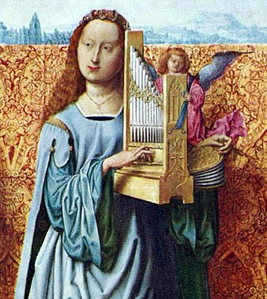
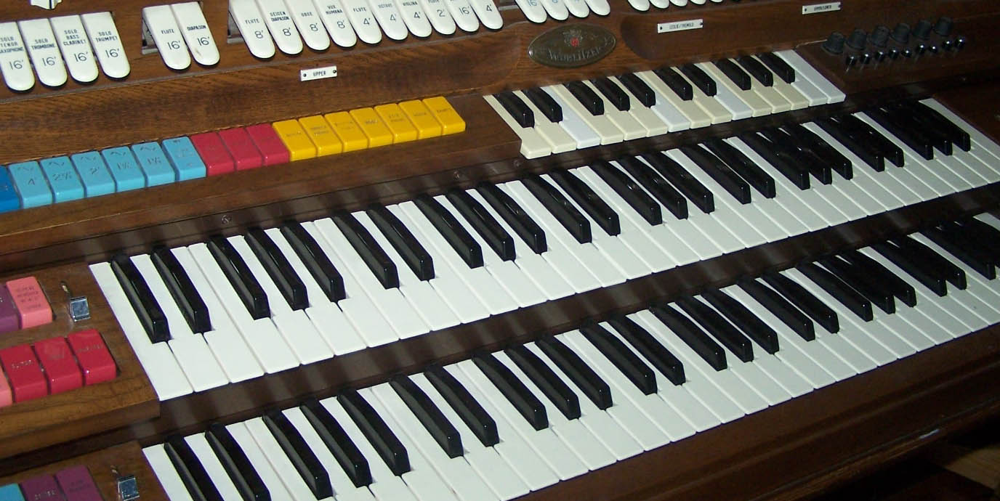

Antiquity History
The organ is one of the oldest instruments still used in European classical music that has commonly been credited as having derived from Greece. Its earliest predecessors were built in ancient Greece in the 3rd century BC. The word organ is derived from the Ancient Greek ὄργανον (órganon),[17] a generic term for an instrument or a tool,[18] via the Latin organum, an instrument similar to a portative organ used in ancient Roman circus games.
The Greek engineer Ctesibius of Alexandria is credited with inventing the organ in the 3rd century BC. He devised an instrument called the hydraulis, which delivered a wind supply maintained through water pressure to a set of pipes.[19] The hydraulis was played in the arenas of the Roman Empire. The pumps and water regulators of the hydraulis were replaced by an inflated leather bag in the 2nd century AD,[19] and true bellows began to appear in the Eastern Roman Empire in the 6th or 7th century AD.[5] Some 400 pieces of a hydraulis from the year 228 AD were revealed during the 1931 archaeological excavations in the former Roman town Aquincum, province of Pannonia (present day Budapest), which was used as a music instrument by the Aquincum fire dormitory; a modern replica produces an enjoyable sound.
The 9th century Persian geographer Ibn Khurradadhbih (d. 911), in his lexicographical discussion of instruments, cited the urghun (organ) as one of the typical instruments of the Eastern Roman (Byzantine) Empire.[20] It was often used in the Hippodrome in the imperial capital of Constantinople. A Syrian visitor describes a pipe organ powered by two servants pumping "bellows like a blacksmith's" as being played while guests ate at the emperor's Christmas dinner in Constantinople in 911.[6] The first Western European pipe organ with "great leaden pipes" was sent from Constantinople to the West by the Byzantine emperor Constantine V as a gift to Pepin the Short King of the Franks in 757. Pepin's son Charlemagne requested a similar organ for his chapel in Aachen in 812, beginning its establishment in Western European church music.[21]
Medieval History
From 800 to the 1400s, the use and construction of organs developed in significant ways, from the invention of the portative and positive organs to the installation of larger organs in major churches such as the cathedrals of Winchester[23] and Notre Dame of Paris.[24] In this period, organs began to be used in secular and religious settings. The introduction of organ into religious settings is ambiguous, most likely because the original position of the Church was that instrumental music was not to be allowed.[23] However, by the twelfth century there is evidence for permanently installed organs existing in religious settings such as the Abbey of Fécamp and other locations throughout Europe.[23]
Several innovations occurred to organs in the Middle Ages, such as the creation of the portative and the positive organ. The portative organs were small and created for secular use and made of light weight delicate materials that would have been easy for one individual to transport and play on their own.[25] The portative organ was a "flue-piped keyboard instrument, played with one hand while the other operated the bellows."[26] Its portability made the portative useful for the accompaniment of both sacred and secular music in a variety of settings. The positive organ was larger than the portative organ but was still small enough to be portable and used in a variety of settings like the portative organ. Towards the middle of the 13th century, the portatives represented in the miniatures of illuminated manuscripts appear to have real keyboards with balanced keys, as in the Cantigas de Santa Maria.[27]
It's difficult to directly determine when larger organs began to be installed in Europe; however one of the first eyewitness accounts of organs is from Wulfstan of Winchester. This detailed account gives us an idea of what organs were like prior to the thirteenth century, when there are more records of large organs being placed in churches as well as their uses.[28] In his account, he describes the sound of the organ: "among them bells outstanding in tone and size, and an organ [sounding] through bronze pipes prepared according to the musical proportions."[28] This is one of the earliest accounts of organs in Europe and also indicates that the organ was large and more permanent than other evidence would suggest.[29]
The first organ documented to have been permanently installed was one installed in 1361 in Halberstadt, Germany,[30] The first documented permanent organ installation likely prompted Guillaume de Machaut to describe the organ as "the king of instruments", a characterization still frequently applied.[31] The Halberstadt organ was the first instrument to use a chromatic key layout across its three manuals and pedalboard, although the keys were wider than on modern instruments.[32] It had twenty bellows operated by ten men, and the wind pressure was so high that the player had to use the full strength of his arm to hold down a key.[30]
Records of other organs permanently installed and used in worship services in the late thirteenth and fourteenth centuries are found in large cathedrals such as Notre Dame, where in the 1300s you can find documents of organists being hired to work for the church as well as records documenting the installation of larger and permanent organs.[24] The earliest record is a payment from 1332 from the clergy of Notre Dame to an organist to perform on the feasts St. Louis and St. Michael.[24] The Notre Dame School also shows how organs could have been used within the increased use of polyphony, which would have allowed for the use of more instrumental voices within the music.[33] This shows that by this point in time organs were being fully used within church services and not just in secular settings. There is proof that organs existed earlier in the medieval period, based on the surviving keyboards and casings of some organs, however no pipes from organs survive from this period.[34] Until the mid-15th century, organs had no stop controls. Each manual controlled ranks at many pitches, known as the "Blockwerk."[35] Around 1450, controls were designed that allowed the ranks of the Blockwerk to be played individually. These devices were the forerunners of modern stop actions.[36] The higher-pitched ranks of the Blockwerk remained grouped together under a single stop control; these stops developed into mixtures.[37]
Renaissance History
During the Renaissance and Baroque periods, the organ's tonal colors became more varied. Organ builders fashioned stops that imitated various instruments, such as the krummhorn and the viola da gamba. Builders such as Arp Schnitger, Jasper Johannsen, Zacharias Hildebrandt and Gottfried Silbermann constructed instruments that were in themselves artistic masterpieces, displaying both exquisite craftsmanship and beautiful sound. These organs featured well-balanced mechanical key actions, giving the organist precise control over the pipe speech. Schnitger's organs featured particularly distinctive reed timbres and large Pedal and Rückpositiv divisions.[39]
Different national styles of organ building began to develop, often due to changing political climates.[40] In the Netherlands, the organ became a large instrument with several divisions, doubled ranks, and mounted cornets. The organs of northern Germany also had more divisions, and independent pedal divisions became increasingly common.[40] The divisions of the organ became visibly discernible from the case design. Twentieth-century musicologists have retroactively labelled this the Werkprinzip.[41]
Baroque pipe organ of the 18th century at Monastery of Santa Cruz, Coimbra, Portugal
In France, as in Italy, Spain and Portugal, organs were primarily designed to play alternatim verses rather than accompany congregational singing. The French Classical Organ, became remarkably consistent throughout France over the course of the Baroque era, more so than any other style of organ building in history, and standardized registrations developed.[42][43] It was elaborately described by Dom Bédos de Celles in his treatise L'art du facteur d'orgues (The Art of Organ Building).[44]
In England, many pipe organs were destroyed or removed from churches during the English Reformation of the 16th century and the Commonwealth period. Some were relocated to private homes. At the Restoration, organ builders such as Renatus Harris and "Father" Bernard Smith brought new organ-building ideas from continental Europe. English organs evolved from small one- or two-manual instruments into three or more divisions disposed in the French manner with grander reeds and mixtures, though still without pedal keyboards.[45] The Echo division began to be enclosed in the early 18th century, and in 1712 Abraham Jordan claimed his "swelling organ" at St Magnus-the-Martyr to be a new invention.[42] The swell box and the independent pedal division appeared in English organs beginning in the 18th century.[45][46]
Romantic History
During the Romantic period, the organ became more symphonic, capable of creating a gradual crescendo. This was made possible by voicing stops in such a way that families of tone that historically had only been used separately could now be used together, creating an entirely new way of approaching organ registration. New technologies and the work of organ builders such as Eberhard Friedrich Walcker, Aristide Cavaillé-Coll, and Henry Willis made it possible to build larger organs with more stops, more variation in sound and timbre, and more divisions.[45] For instance, as earlier as in 1808, the first 32' contre-bombarde was installed in the great organ of Nancy Cathedral, France. Enclosed divisions became common, and registration aids were developed to make it easier for the organist to manage the great number of stops. The desire for louder, grander organs required that the stops be voiced on a higher wind pressure than before. As a result, a greater force was required to overcome the wind pressure and depress the keys. To solve this problem, Cavaillé-Coll configured the English "Barker lever" to assist in operating the key action. This is, essentially, a servomechanism that uses wind pressure from the air plenum, to augment the force that is exerted by the player's fingers.[47]
Organ builders began to lean towards specifications with fewer mixtures and high-pitched stops. They preferred to use more 8′ and 16′ stops in their specifications and wider pipe scales.[48] These practices created a warmer, richer sound than was common in the 18th century. Organs began to be built in concert halls (such as the organ at the Palais du Trocadéro in Paris), and composers such as Camille Saint-Saëns and Gustav Mahler used the organ in their orchestral works.
Modern Development
The development of pneumatic and electro-pneumatic key actions in the late 19th century made it possible to locate the console independently of the pipes, greatly expanding the possibilities in organ design. Electric stop actions were also developed, which allowed sophisticated combination actions to be created.[49]
Beginning in the early 20th century in Germany and in the mid-20th century in the United States, organ builders began to build historically inspired instruments modeled on Baroque organs. They returned to building mechanical key actions, voicing with lower wind pressures and thinner pipe scales, and designing specifications with more mixture stops.[50] This became known as the Organ reform movement.
In the late 20th century, organ builders began to incorporate digital components into their key, stop, and combination actions. Besides making these mechanisms simpler and more reliable, this also makes it possible to record and play back an organist's performance using the MIDI protocol.[51] In addition, some organ builders have incorporated digital (electronic) stops into their pipe organs.
The electronic organ developed throughout the 20th century. Some pipe organs were replaced by digital organs because of their lower purchase price, smaller physical size, and minimal maintenance requirements. In the early 1970s, Rodgers Instruments pioneered the hybrid organ, an electronic instrument that incorporates real pipes; other builders such as Allen Organs and Johannus Orgelbouw have since built hybrid organs. Allen Organs first introduced the electronic organ in 1937 and in 1971 created the first digital organ using CMOS technology borrowed from NASA which created the digital pipe organ using sound recorded from actual speaking pipes and incorporating the sounds electronically within the memory of the digital organ thus having real pipe organ sound without the actual organ pipes.
